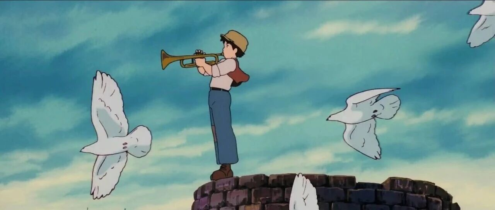

我终于过上想要的人生了！！！
点击关注 秋秋很开心
分享个人成长、提前退休生活日常

图：@秋秋
文：@秋秋
大家好，我是秋秋呀。
很多人都觉得我是个很有效率的J人，其实是我很早就明确了自己的人生主线。
在《只管去做》中，邹小强提出“人生九宫格”工具，它把人的生活划分为几个重要维度：身体健康、财务理财、人际社群、工作事业、家庭生活、学习成长、体验突破、休闲娱乐。
像一个人一样立体而完整：


人脚下踩着的是三个根基，包括健康、财务、社交。你没健康不行吧，病床上躺着啥也做不了。你没钱不行吧，吃喝拉撒、生老病死，哪个不需要钱？你没朋友不行吧，孤独终老太可怜了。
人左右手握着的是工作和生活的平衡，两手抓，两手都要硬。
人头顶上是三种享受，学习过程中的成长享受，体验突破的愉悦享受，还有休闲娱乐的放松享受。
《只管去做》
这个九宫格虽然全面，但内容较多。我将其浓缩为三条更清晰的人生主线：健康、生活、价值。
一、健康
我认为这是一切的根基，包括四个方面：运动、饮食、睡眠、情绪。
运动
我是做有氧与力量结合，包括长时间低心率有氧（如慢跑、骑行）和每周两次力量训练。
像威海这边，空气很好，很适合沿着海边跑步。

运动的目标并不是追求速度的快慢，而是持续稳定地提升心肺功能和代谢能力。
2
饮食
我现在的饮食节奏是：一日两餐、过午不食。
很多人好奇这样吃会不会饿，吃什么？
其实我是低碳水、高蛋白的饮食：早饭红薯、南瓜、米粥，中午牛肉、青菜，饱腹感很强。
配合轻断食，让身体保持清爽状态。
3
睡眠
之前看老中医，晚上9点睡养气、10点睡养血。
所以我会尽量晚上10点前入睡，抓住身体的黄金修复时段。
像工作党、学生党，没有这个条件，也可以白天安排多次小睡（15分钟左右），快速恢复精力。
4
情绪
这个我真的要好好安利一下，我会用回信管理情绪。
方法就是集中一个时间，写下所有烦恼，像回信一样，自我对话。
这样不仅可以解决过去的烦恼，也可以缓解未来的焦虑，释放压力。
比如买车，涉及到的各种细节（选车、试驾、提车、验车...）写下来，然后给出时间和方案，这样可以放空大脑，做出更好的选择，从而情绪稳定。
每个人都有不同的方法，去维持健康。
像大老王，他维持身体健康的方法是每年参加两场马拉松比赛：3月份一次，12月份一次。

每年剩下的时间都在这为这两场比赛做准备。凌晨四五点就出去跑步，月跑量都在200公里以上。
在这个过程中，体重从170斤减到了140斤。
二、生活
在年轻时，我们可能会忽视生活的重要性，但它其实是滋养爱的地方。生活上包括四个方面：家庭关系、体验突破、人际社群、休闲娱乐。
家庭关系
主要做好两点：基础保障和情感联系。
在基础保障上面，一定要未雨绸缪，这会省掉很多不必要的麻烦。
比如今年七月，家人检查出肺部结节需手术，因我们早已配齐保险并坚持定期体检，实现了早发现、早治疗。
当然买房买车，我们也都很谨慎。
在情感联系上面，我们会组织家庭活动，端午节一起包粽子，为家人做炸酱面，安排一起旅游，还会召开家庭会议，进行复盘，节日也很有仪式感。

2
体验突破
这是我认为不管自己的生活还是婚姻生活，不枯燥的原因。
今年五月，我们开启旅居生活。从北京到威海，选择骑行890公里回家。

我未来的梦想就是环游世界，其实一个人已经去了很多地方，但是这次想一起去探险。
人生不是轨道，是旷野。偶尔跳出动线，才能看见新可能。
3
人际社群
我也会定期与好友深度交流，获得同频的共鸣，还会认识新朋友。
同时我也在运营的“剪辑社群、副业社群、退休社群”，一直在和大家一起成长。

4
休闲娱乐
生活需要松弛有度，即便选择暂时躺平，也无需指责自己。
追一部好剧、去海边发呆、短途旅行、吃一顿美食，适度的放空，是为了更好的重新出发。
三、价值
说完了健康、生活，可能还需要一个更高维度，就是价值，包括三个方面：学习成长、主业副业、FIRE（财务自由、提前退休）。
学习成长
这是输入的过程，通常大家会读书、看电影、听播客、阅读碎片化信息。
我的建议是大家一定要有目的地筛选吸收，这样输入才会成为认知的燃料。
比如我25岁存够第一个100万的时候，就喜欢看工具书、理财书、纪录片，这些可以帮助我做出更明智的选择。
2
工作副业
这是输出的过程。
我的主业（编导），一直在提升专业能力，像剪辑技术的发展，要跟上时代的脚步。
我的副业做过很多：自媒体、上门喂猫、摆摊、闲鱼卖货、AI设计、一人公司，要不断地尝试，才能立于不败之地。
3
FIRE（财务自由，提前退休）
这是我研究生时的目标，目前已经实现3年了。
退休不是躺平，而是主动选择的生活方式，通过理财规划、资产配置，逐步实现“选择自由”。
现在每一天都不会为了明天而牺牲自己，每一天起床都可以说：今天又是完全属于自己的一天。
| 总结 |
一定要尽早确定自己的人生主线！！！
健康、生活、价值——打理好这三条主线，才能把生命这场游戏，玩的更加精彩、更加持久。
正如纳瓦尔所说：健康、爱和使命，以此为序，其他的都不重要。
✨ 如果这篇文章对你有启发，一定转发给你关心的人。
“分享” 朋友，TA也想看